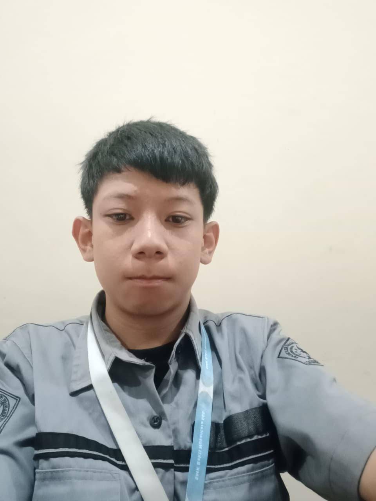

Informasi Tentang Website Ini
Website ini merupakan platform digital yang dirancang untuk mempermudah proses pengumpulan tugas antara guru dan siswa. Melalui antarmuka yang sederhana dan mudah digunakan, siswa dapat mengunggah tugas dalam berbagai format seperti dokumen, gambar, maupun video. Guru dapat dengan cepat memeriksa, memberi nilai, serta memberikan umpan balik langsung kepada setiap siswa. Fitur-fitur yang tersedia meliputi dashboard tugas, notifikasi tenggat waktu, riwayat pengumpulan, serta ruang komunikasi antara guru dan siswa. Dengan sistem yang terorganisir, website ini membantu meningkatkan efisiensi pembelajaran, mengurangi penggunaan kertas, dan memastikan setiap tugas tersimpan dengan rapi dan aman.
Tim Pembuat
